10 部片单 · 恐怖 / 科幻 / 惊悚 / 悬疑 / 剧情
| # | 片名 | 类型 | 评分 / 备注 |
|---|---|---|---|
| 01 | 瘴气营地的青春性事与死亡 | 恐怖 / 元砍杀 | 95% / MUBI / 简·舍恩布伦第三部长片 |
| 02 | 逃无止境 | 恐怖 / 心理公路 | 95% / 长片处女作 / 20 天 / 一辆车 |
| 03 | 利未记 | 恐怖 / 社会寓言 | 92% / 83 / NEON |
| 04 | 死人开关 | 惊悚 / 真实事件 | 91% / 76% / 格斯·范桑特 |
| 05 | 幽旅巫咒 | 恐怖 / 民俗 | 88% / 7.3 / 76 |
| 06 | 我们埋葬死者 | 恐怖 / 剧情 | 88% / 丧尸 / 哀悼 / 扎克·希尔迪奇 |
| 07 | 洛杉矶劫案 | 惊悚 / 犯罪 | 88% / 83% / 唐·温斯洛 |
| 08 | 全信没收 | 惊悚 / 悬疑 | 77% / 65% / 63 |
| 09 | 铁肺 | 科幻 / 恐怖 | 88% / 61% / 5000 万美元 |
| 10 | 罗宾汉之死 | 剧情 / 惊悚 | 66% / 60 / 迈克尔·萨诺斯基 |
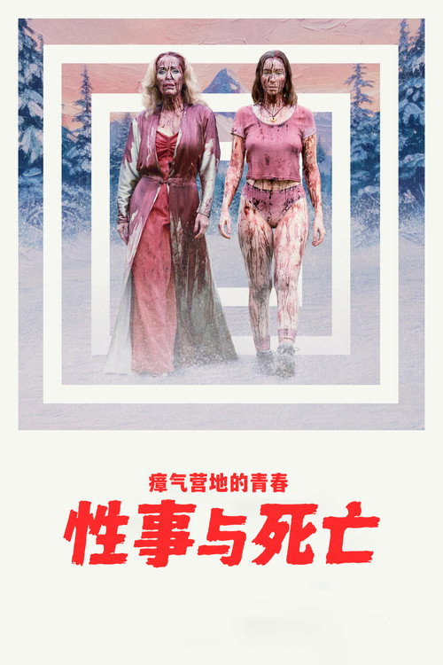
瘴气营地的青春性事与死亡 Teenage Sex and Death at Camp Miasma
把砍杀片拆开重装，最后变成了写给影迷的一封情书。
剧情梗概
独立导演新星克莉丝被片方找去重启沉睡多年的砍杀片系列《瘴气营地》。她是骨灰粉，坚持要找回初代「最后的女孩」——早已息影隐居的比利·普雷斯利。两个女人在雪林深处的旧营地相遇，一边是学术分析，一边是情欲试探；虚构的血浆和现实开始互相渗透。
亮点
- 把砍杀片拍成了「我们为什么迷恋恐怖片」的元电影：每一次凝视都在被反凝视。
- 汉娜·艾因宾德（《绝望写手》）把社交尴尬的年轻导演演得可爱又可怜；吉莲·安德森则把过气尖叫女王演成了诺玛·戴斯蒙德式的南方哥特。
- 血浆是故意廉价的，笑声是认真的——片中虚构的系列作还请来 Jack Haven 演持鱼叉的「小死神」。
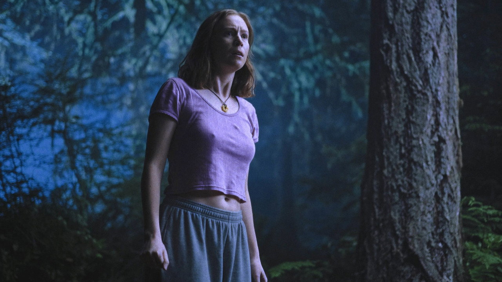
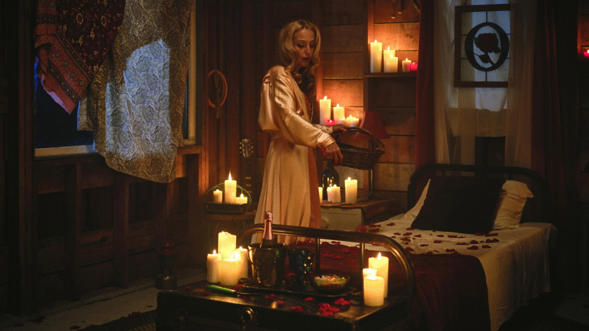
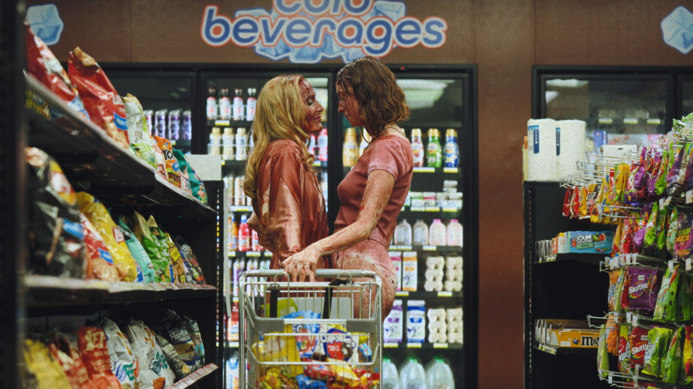
导演与主创 · 他们的历史作品


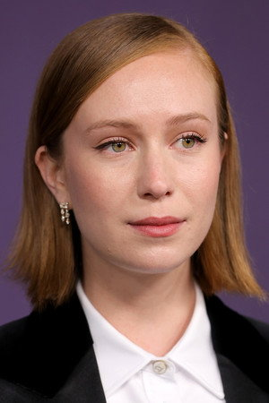
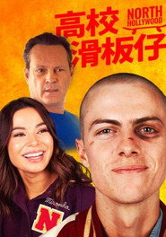
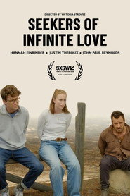
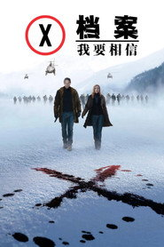

短评（轻微剧透）
它最聪明的地方，是把「看」和「被看」翻了个面——开场第一个镜头就让观众意识到自己正盯着别人的身体，之后整部片都在玩这个游戏。克莉丝以为自己是来拍电影的，最后才发现她要找的不是比利，而是那个被自己藏起来的自己。那条虚构系列的杀人规则「你越想要，就越危险」，说的是性，也是影迷身份本身。结尾不建议提前知道。
为什么值得一看
恐怖片爱好者、meta 电影爱好者、《我看透了电视发光》的观众。风格浓烈、结构松散，喜欢工整叙事的人可能会不适应。
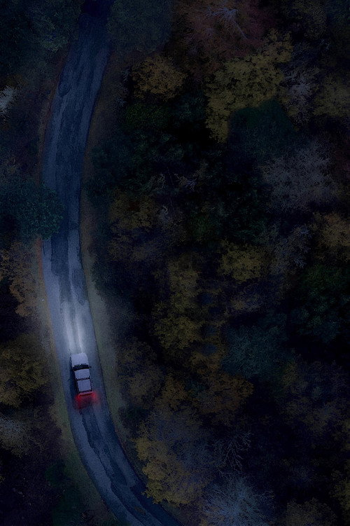
逃无止境 It Ends
四个刚毕业的朋友，开上了一条没有尽头的路。
剧情梗概
大学刚毕业，詹姆斯、戴、费舍和泰勒夜里开车出门吃宵夜，想在各奔东西前最后聚一次。他们拐上一条林间双车道，然后路就再也不结束了：油表永远停在四分之一，饥饿和困意都消失，只要一停车，就有东西从林子里扑过来。几天、几周、几个月过去，唯一在变化的，是四个人对理智的握力。
亮点
- 亚历山大·乌洛姆的长片处女作，20 天拍完、几乎全片困在一辆吉普车里，靠台词和沉默撑满 87 分钟。
- 概念极简，落点极准：一条无尽的路，就是二十几岁那股「我的人生好像没有出口了」的窒息感。
- 四位新人演员之间的群戏是真的——吵架、讲烂梗、沉默，都像偷拍来的。
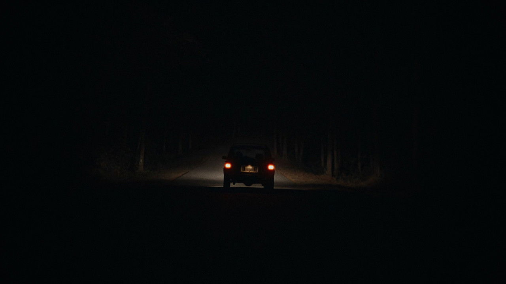
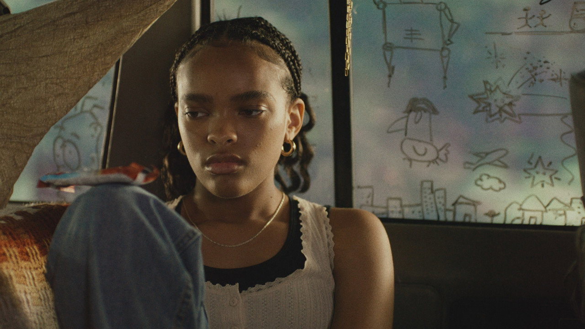
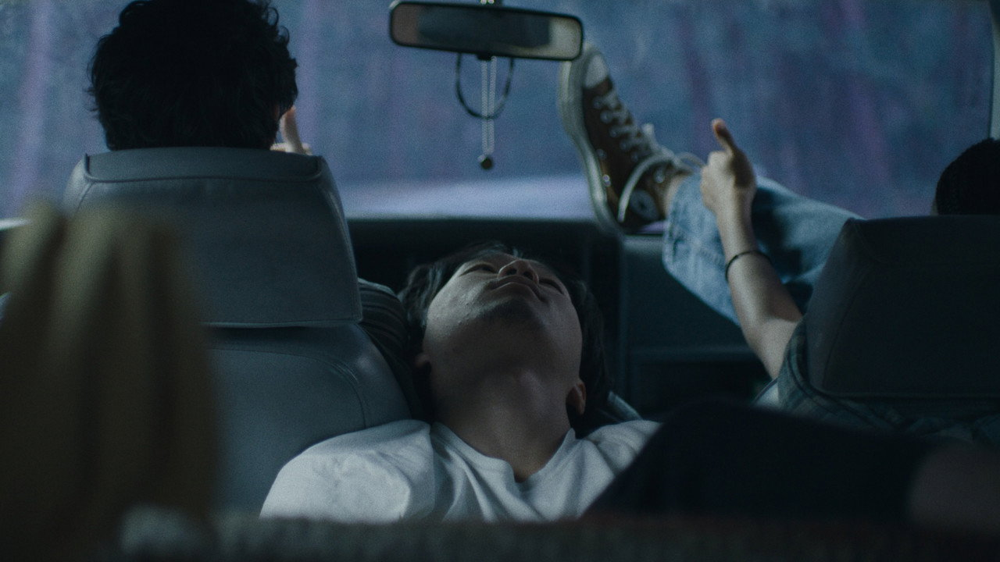
导演与主创 · 他们的历史作品
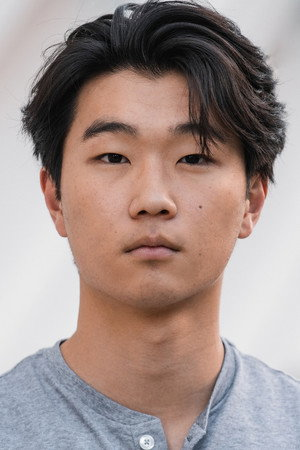
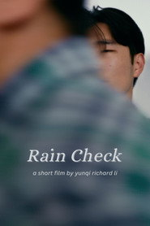
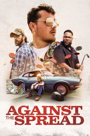
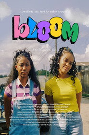
短评（轻微剧透）
它不是恐怖片，是存在主义恐怖片：没有怪物，只有重复。中段你会觉得闷，那是故意的——他们重复，你就跟着重复。真正的转折在后三分之一，当四个人从「找答案」转向「要不要就此接受」，片子才露出它真正想说的话。片尾那个关于五十只鹰和一万只老鼠的烂梗，最后竟成了全片最温柔的东西：人能互相陪着，本身就是意义。
为什么值得一看
喜欢《后室》《痴迷》那种高概念小成本的人；正在二十几岁、怀疑「下一步该怎么走」的人，可能会看得有点疼。
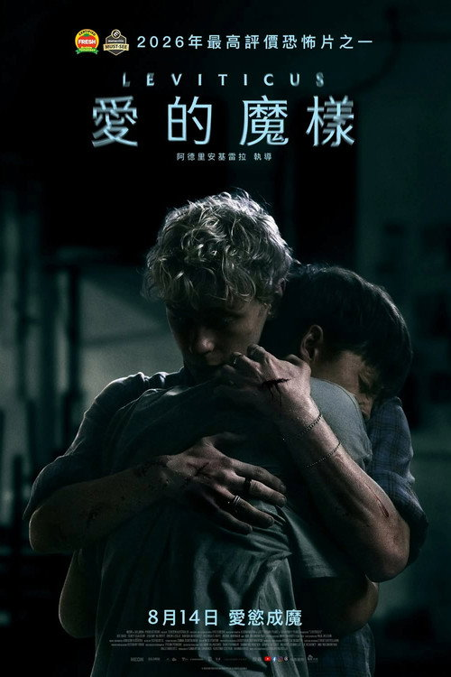
利未记 Leviticus
最可怕的不是恶灵，是那些替你「祈祷」的人。
剧情梗概
澳大利亚维多利亚州一个封闭虔诚的小镇上，少年内姆和瑞恩之间生出了不该有的情愫。牧師发现后，为两人安排了一场「转化仪式」。仪式出了岔子，放出了一个实体——它会变成受害者最渴望的那个人。对内姆和瑞恩来说，那意味着彼此。
亮点
- 阿德里安·基亚雷拉的长片处女作，圣丹斯午夜单元爆红后，NEON 以七位数买下。
- 制片方 Causeway Films 正是《鬼书》《回应我》《带她回来》的班底——澳洲恐怖又一波新血。
- 米娅·华希科沃斯卡（《猩红山峰》《爱丽丝梦游仙境》）演内姆的母亲，是全片最安静、也最残忍的反派。
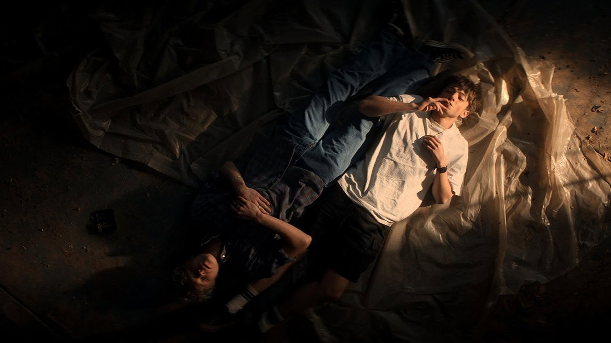
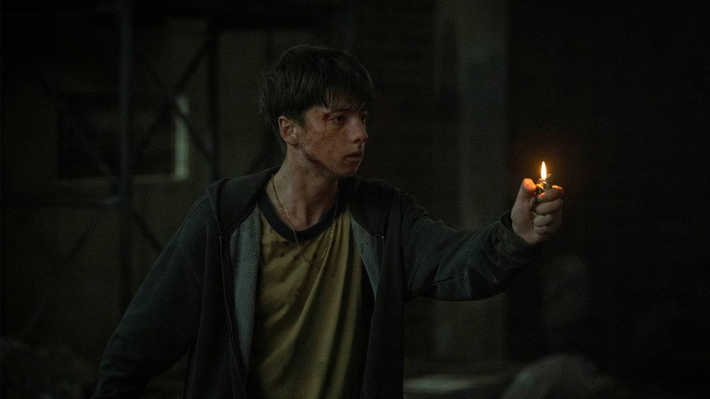
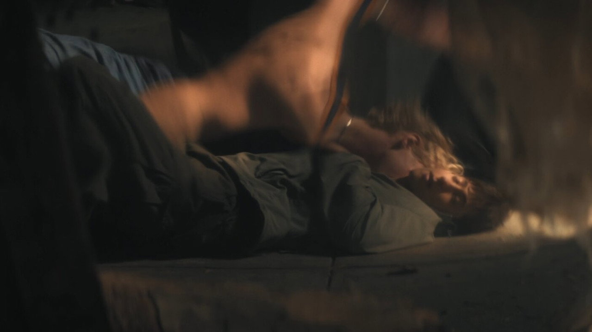
导演与主创 · 他们的历史作品
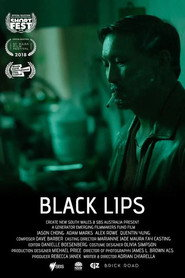
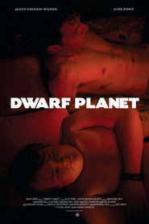

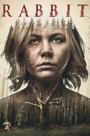
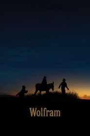

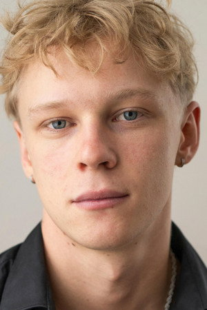
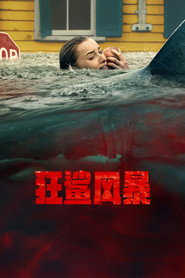
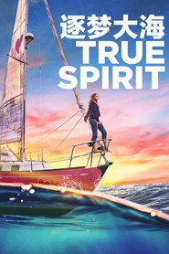
短评（轻微剧透）
书名《利未记》在历史上长期被用来为恐同背书，导演把这层历史直接写成了怪物的规则：它追的从来不是罪，是欲望本身，所以你越祈祷，它离得越近。前半段是青春片，后半段是逃亡片，中间那道疤是「你得先承认自己是谁，才可能活下来」。仪式那场戏看完会难受很久——不是因为血，是因为那些人真的相信自己在救人。
为什么值得一看
想看今年最有作者性的恐怖片之一；对《逃出绝命镇》式社会隐喻有好感的人。
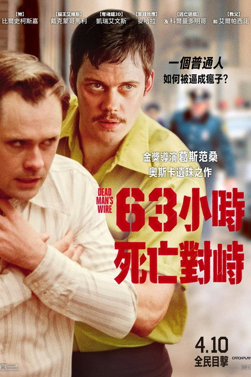
死人开关 Dead Man's Wire
他把枪口绑在自己和人质的脖子上，然后全国都开始给他加油。
剧情梗概
1977 年 2 月，印第安纳波利斯。地产商托尼·基里西斯认定自己被抵押贷款公司做局、骗光了家产，于是持一把锯短猎枪闯进办公室，绑走了贷款经纪人理查德·霍尔。他用一根「死人开关」把扳机和两人的脖子连在一起——只要有人冲进来，枪就自动响。63 小时，全国直播，而他成了工人阶级的民间英雄。
亮点
- 格斯·范桑特（《心灵捕手》《大象》《米尔克》）回归，用老式电视摄影机拍出了真正的 1970 年代质感。
- 比尔·斯卡斯加德火力全开，把一个既可笑又可怜的疯子演得让人无法移开视线，是他目前最好的表演。
- 结构像《热天午后》加《电视台风云》：媒体、阶级愤怒、司法信任，全挤在这一次对峙里烧。
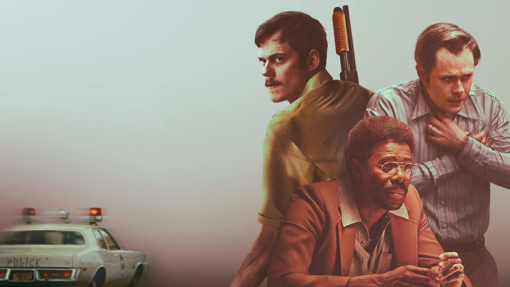
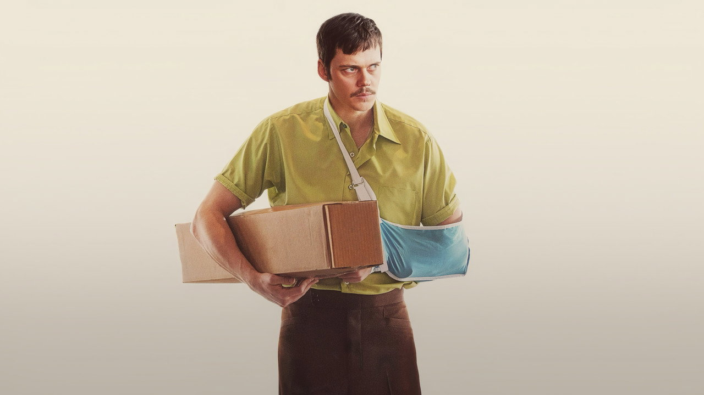
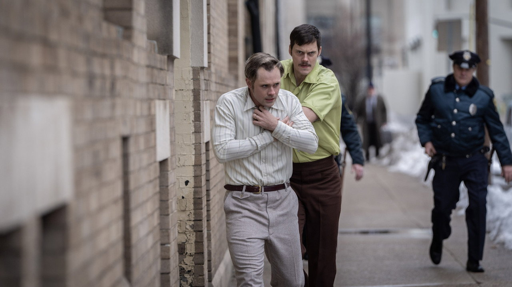
导演与主创 · 他们的历史作品
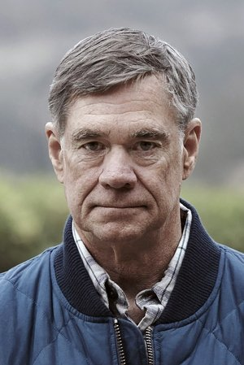

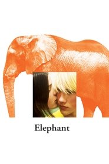


短评（轻微剧透）
最锋利的一笔是媒体的转向——托尼的愤怒明明是私人的，却被广播和电视加工成了公共情绪，于是人质反倒成了屋子里最不重要的那个人。范桑特不肯给你一个可以安心同情的英雄，也不肯给你一个纯粹的恶棍；他给你一屋子各怀目的的人，和一个在镜头前越演越嗨的绑匪。看完你会想起那些「热搜上的受害者与加害者」，然后有点不舒服。
为什么值得一看
喜欢《热天午后》《电视台风云》那种七十年代美国电影的人；对媒体审判与阶级叙事有兴趣的观众。Netflix 已上线。
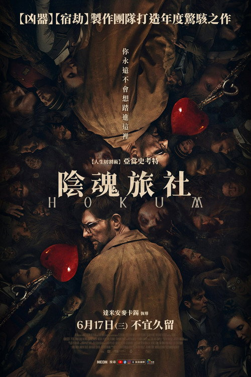
幽旅巫咒 Hokum
你来撒骨灰，酒店里有个四百岁的东西在等你。
剧情梗概
恐怖小说家欧姆·鲍曼写不出自己三部曲的最后一章。借着去爱尔兰撒父母骨灰的机会，他住进了父母当年度蜜月的偏僻旅馆。酒廊里流传着一个说法：蜜月套房被封了几百年，里面关着一个女巫。当接待员菲奥娜失踪后，欧姆决定自己去敲那扇门。
亮点
- 达米安·麦卡锡（《咒物寻凶》《危险警告》）第三部长片，把「走廊、声音、你以为那里有什么」三件事做到了极致。
- 亚当·斯科特（《人生切割术》）演一个刻薄、酗酒、毫不讨喜的作家，是他近年最好的一次表演。
- 惊吓点精准但不廉价：全片几乎没有血浆，光和黑暗就是他的全部武器。
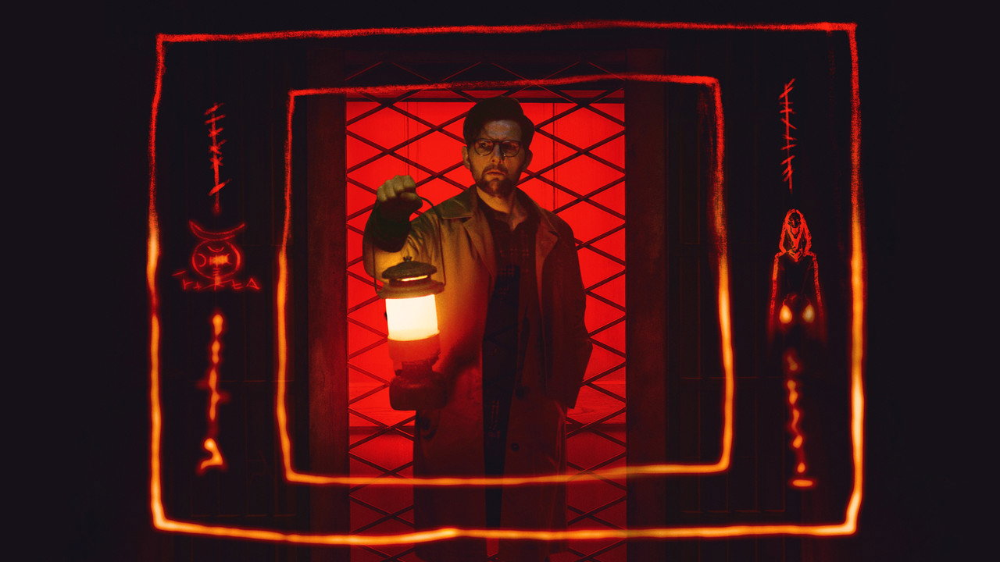
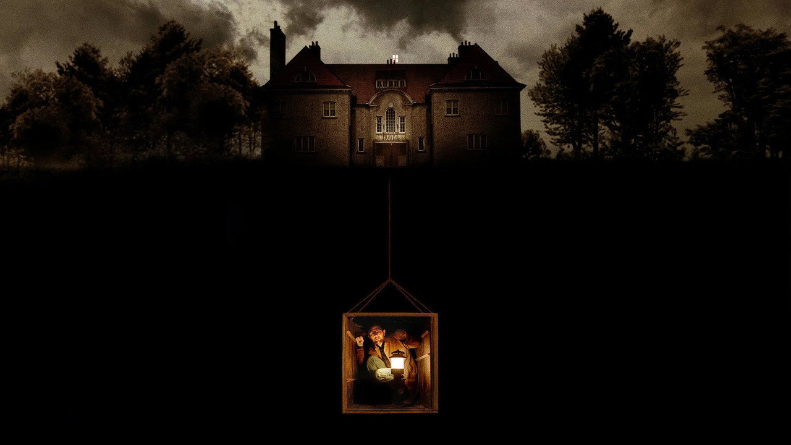
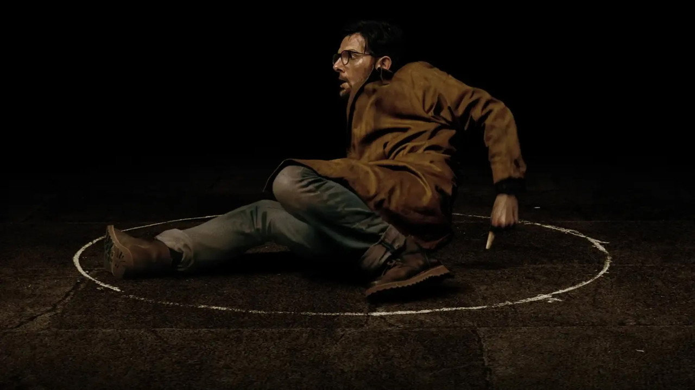
导演与主创 · 他们的历史作品

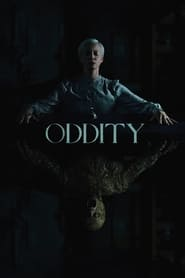


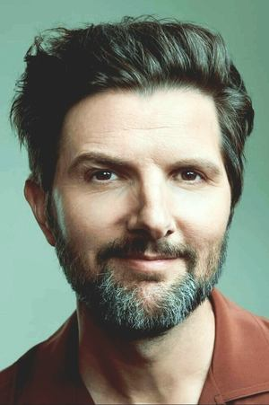


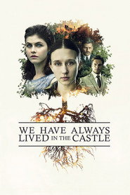
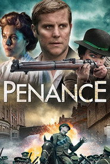
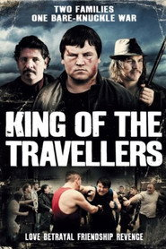
短评（轻微剧透）
前半段你会以为这是「讨厌鬼活该」的故事；中段两次转折之后才明白，女巫只是个入口，真正关在套房里的，是欧姆十一岁那年的旧事。麦卡锡很坏——他先让你嘲笑这个人，再让你为他心碎。结尾那一下不是惊吓，是赦免：关于能不能原谅小时候的自己。看完记得走一段亮的路。
为什么值得一看
喜欢《咒物寻凶》《危险警告》那种慢火阴森的人；想在恐怖片里被扎一下心的人。
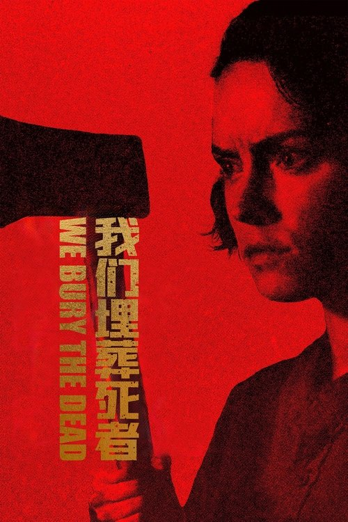
我们埋葬死者 We Bury the Dead
她不是去找丧尸的，她是去找丈夫的。
剧情梗概
一次军事实验在塔斯马尼亚外海失控，五十万人瞬间死去。随后，部分尸体开始动。物理治疗师艾娃混进遗体回收队，只为在隔离区里找到失踪的丈夫。搭档克莱务实又冷，把尸体当成「活儿」处理。而那些复活的，似乎还留着生前的某种执念。
亮点
- 扎克·希尔迪奇（《1922》《最后之时》）把丧尸片拍成了哀悼片——恐怖只是背景音。
- 戴茜·雷德利交出《星球大战》之后最有分寸的一次表演，克制到只用肩膀和下颌在演。
- 声音设计是全片最狠的武器：牙齿磨碎的声音会在散场后跟着你。
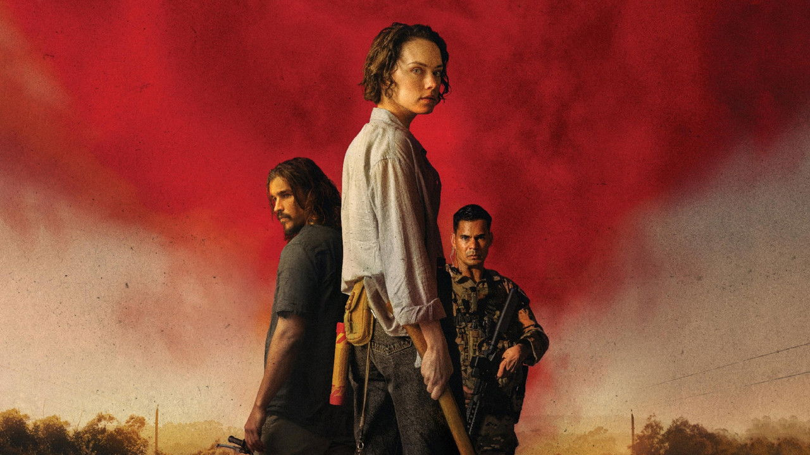
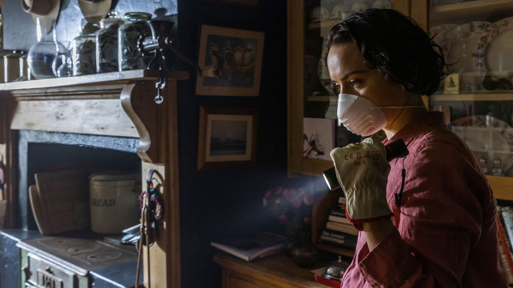
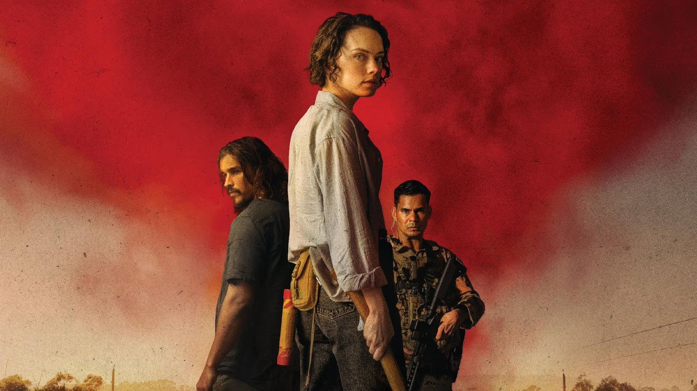
导演与主创 · 他们的历史作品
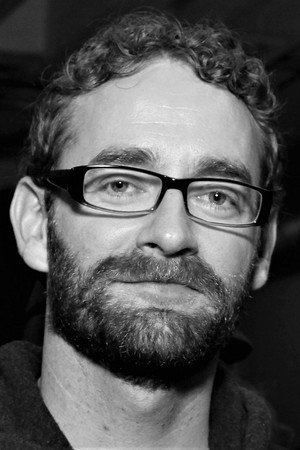

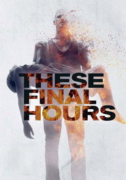
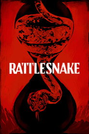
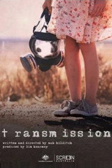


短评（轻微剧透）
它真正想问的是：如果连尸体都没找到，你要怎么开始悲伤？那些「回来」的死者不是怪物，是未完成的告别——所以艾娃一次次靠近它们，哪怕危险。中段确实拖，第三幕收得也急，但当她终于站在那扇门前，前面所有的重复都成了必要的铺垫。这不是丧尸片，是《Handling the Undead》那一挂的哀伤电影，套了一层类型片的壳。
为什么值得一看
想看丧尸题材、但已经厌倦「打丧尸」的人；对「未完成的告别」这个主题有感觉的人。
洛杉矶劫案 Crime 101
今年最像「电影」的那部电影：洛杉矶、公路、收手前的最后一票。
剧情梗概
沿 101 号公路作案的珠宝大盗迈克，从不出错、从不伤人、也从不留下证据。他准备干完最后一票就收手——三百万美元的钻石。追了他很久的警探卢终于摸到了规律，而保险经纪人莎伦正站在自己人生的岔路口。三个人被同一件事拽到一起，猎人和猎物的位置开始互换。
亮点
- 巴特·雷顿（《美国动物》《冒充者》）改编唐·温斯洛同名小说，把迈克尔·曼那套洛杉矶的冷与暖拍出了新血。
- 克里斯·海姆斯沃斯演反类型的克制，哈莉·贝瑞拿到近年最扎实的一个角色，巴里·基奥汉是那根炸药。
- 不靠爆炸和枪战，靠两个聪明人互相逼近——这种耐心现在很少见了。
导演与主创 · 他们的历史作品


短评（轻微剧透）
它最动人的地方，是三个主角其实在做同一件事：想办法让自己的人生重新有得选。迈克想退出，卢想证明自己还没麻木，莎伦想不再被别人替她做决定。所以最后那场戏的紧张不来自枪口，来自「谁会先松手」。节奏偏慢，140 分钟需要耐心，但看完会有那种老派犯罪片才有的满足感。
为什么值得一看
想念《盗火线》《落水狗》那种成年人犯罪片的人；公路与劫案题材爱好者。已于 4 月上线 Prime Video。
全信没收 The Rip
找到两千万之后，他们最先失去的是彼此的信任。
剧情梗概
迈阿密缉毒小队突袭一处毒贩据点，在墙里翻出两千万现金。在账目清完之前，谁都不许离开——于是猜忌开始在这支队伍里扩散：到底谁是内鬼？达蒙和阿弗莱克演一对合作多年的搭档，也是这部片真正的主角。
亮点
- 乔·卡纳汉（《天龙特攻队》《人狼大战》）的老派 B 级片手感，摄影和配乐都很「九十年代」。
- 马特·达蒙 + 本·阿弗莱克的化学反应是真的，而导演故意拿这个「真」来骗你。
- 群戏扎实：史蒂文·元、泰亚娜·泰勒、凯尔·钱德勒都不掉链子。
导演与主创 · 他们的历史作品


短评（轻微剧透）
卡纳汉玩的还是老把戏，但这次他手上多了张王牌：观众太熟悉「马特和本」这对真人挚友了，所以当他让其中一个变坏，你的第一反应不是「剧情需要」，而是「不会吧」。片名 The Rip 指的就是那种被信任的人顺走东西的感觉。后半段动作戏确实收不住，结局也有人觉得扯，但那种「你到底站谁」的不适感，是真的有效。
为什么值得一看
达蒙/阿弗莱克粉丝；想看一部门槛低、节奏快的群戏惊悚片。Netflix 今年观看量最高的原创片之一。
铁肺 Iron Lung
一个人、一艘潜艇、一片血海——300 万美元拍出来的幽闭恐惧。
剧情梗概
「静默狂喜」事件之后，宇宙里所有的恒星和宜居行星都消失了，残存的人类挤在空间站里。囚犯西蒙接到一笔交易：驾驶一艘叫「铁肺」的破旧潜艇，潜入卫星 AT-5 的血之海洋寻找资源，完成即可获释。血海之下，他发现了一具巨大的骨架，上司命令他必须取回样本——而海里还有别的东西。
亮点
- YouTuber Markiplier（3800 万订阅）自编、自导、自演、自剪，还自己出钱、自己发行，全程没有片厂。
- 300 万美元成本换回全球 5000 万美元票房，北美上映首日拿下票房冠军——今年最大的一次「圈外事件」。
- 视听高度自觉：潜艇里几乎没有视野，恐惧全靠声音、仪表和那扇小窗。
导演与主创 · 他们的历史作品
短评（轻微剧透）
影评人不买账（61%），观众买账到不行（88%），这个分裂本身就是看点：它不精致、节奏也长，却把「被困在铁罐头里」这件事做到了生理级别。改编自 David Szymanski 的同名短篇恐怖游戏，最后二十分钟别被剧透——它不是怪物片，是关于「谁在拿你的命换数据」的愤怒。看完你会想，原来一群人为了一个人拍的电影，真的能跟迪士尼打一仗。
为什么值得一看
幽闭恐惧题材爱好者；对独立制作、粉丝经济、游戏改编有兴趣的人。建议先看预告，确认自己受得了那扇小窗。
罗宾汉之死 The Death of Robin Hood
这一次他不劫富济贫，他只是想弄明白自己还算不算个人。
剧情梗概
罗宾汉老了。一场本该是他最后一战的战斗之后，他重伤倒在林中，被修女布里吉德救下。她给了他一个机会：说出真相，也许还能被救赎。而他必须回头面对自己这一生杀过的人、烧过的房子，以及那个一直跟在他身边的老伙计。
亮点
- 迈克尔·萨诺斯基（《救猪行动》《寂静之地：入侵日》）把绿林传说整个拆掉重拍，35mm 胶片，全是泥、血和冷。
- 休·杰克曼交出《金刚狼3》之后最有重量的一次表演——不是英雄迟暮，是罪人清算。
- 朱迪·科默的布里吉德是全片的道德中心，而她的秘密，是全片最好的一刀。
导演与主创 · 他们的历史作品


短评（轻微剧透）
它故意不给你任何爽点：没有射苹果，没有劫富济贫，只有一个老头在泥地里回忆自己干过什么。布里吉德的真实身份一旦揭开，前面所有的温柔都会翻面变成审判。最后那场戏——他让血继续流，把编好的英雄故事讲给一个小女孩听，然后让她射出那一箭——是全片唯一的光，也是唯一的谎言。评价两极（66%），嫌闷的人很多，我站在喜欢的这一边。
为什么值得一看
能接受「沉闷、残酷、两小时不给糖」的观众；《救猪行动》的粉丝，以及想看休·杰克曼证明自己的人。